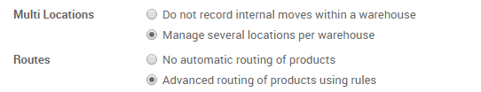

概述
当一个订单进入到发货部门进入到最后的发货阶段，YuanCloud默认的设置是**一步**操作：等所有货物都准备好，就可以用一张发货单一次性的发货。然而，该过程可能不能准确的反映公司的操作，你的公司可能在发货之前需要更多的步骤。
在**三步**过程中(拣货 + 包装 + 发货),货物先被送到包装区域，在那里按照发货的不同目的地被组合起来，然后发到发货阜用来最终发货给客户。
在YuanCloud中要完成**拣货＋包装＋发货**一些必要的配置步骤需要被完成。这些步骤创建额外的库位，这些库位默认的被成为**出货区域**和**包装区域**。所以如果你的仓库的简称是**WH**，该配置会创建一个叫做"WH/发货区域"和另外一个叫做"WH/包装区域"的库位。
第一步货物会从 WH/库存 移动到 WH/包装区域 .。然后从 WH/包装区域 **移动到 **WH/发货区域.。最后从 WH/发货区域 移动到**最后的目的地 [UNKNOWN NODE problematic].
注解
检查：文档：[UNKNOWN NODE problematic]仓库流程`确认该仓库流程是否是需要的正确的方法。
配置
安装存货模块
在**APP**菜单，搜索并安装**存货**模块。

为了能小销售订单需要安装**销售**模块。
允许管理路径
YuanCloud通过**路线**配置交货单的移动。路线提供了一种把不同动作链接到一块的机制。在该状况下，我们把拣货步骤链接到发货步骤。
要管理路径,进入菜单项
在：[UNKNOWN NODE problematic]库位 & 仓库 --> 路线`中，勾选激活**产品的高级路径规则**。并确保**仓库多位置管理**也被激活。
配置仓库为拣货＋包装＋发货
进入菜单项 编辑要使用的仓库。
对于发出的交货，设置选项为**使包装到指定的库位，把它们放到出货区域然后用来发货(拣货＋包装＋发货)。**

创建销售订单
从**销售**模块,创建一张带有要发货产品的销售订单。
注意现在在销售订单上方的**状态**按钮上有3张转运单和本销售订单关联。
如果你点击了按钮，现在就可以看到三个不同调拨单：
第一个带有**拣货**标识拣货流程。
中间一个带有**包装**参照标识包装流程。
最后一个有**OUT**标识发货流程。

处理发货
如何处理拣货这一步骤？
要确保在库存中有足够的产品然后进入**存货**并点击看板卡上的**调拨单**下方的**等待**链接。

点击你想要处理的调拨单
如果可用，点击**预留**预留产品
点击**确认**计算从**仓库／库存**到**库存／包装区域**。
已经完成了拣货步骤并且在该**WH/拣货**单的页面上方的状态按钮显示已经**完成**。产品已经从**WH/库存**移动到了**WH/包装**区域，这样下一步的操作就可以进行了(包装)。
如何处理包装这一步骤？
进入**存货**并点击**包装**看板下方的**# TRANSFERS**链接。
点击你想要处理的调拨单
点击确认完成从**仓库／包装区域**到**仓库／出货区域**的调拨。
这样已经完成了包装步骤并且在该**WH/包装**单页面上方的状态栏位显示已经**完成**。产品已经从**WH/包装区域**移动到了**WH/出货区域**，这样下一步的操作(发货)就可以进行了。
如何处理发货这一步骤？
进入**存货**点击看板卡上**发货单**下方的**# 待做**链接。

点击你想要处理的调拨单
点击**确认**来完成从**库存／发货区域**到**客户库位**的调拨(基于**待做**列表栏的数量，点击**应用**来修正数量)。
现在已经完成了发货步骤并且**仓库／发货区**看板上该单子应该显示为**完成**状态。产品已经发到客户那边。